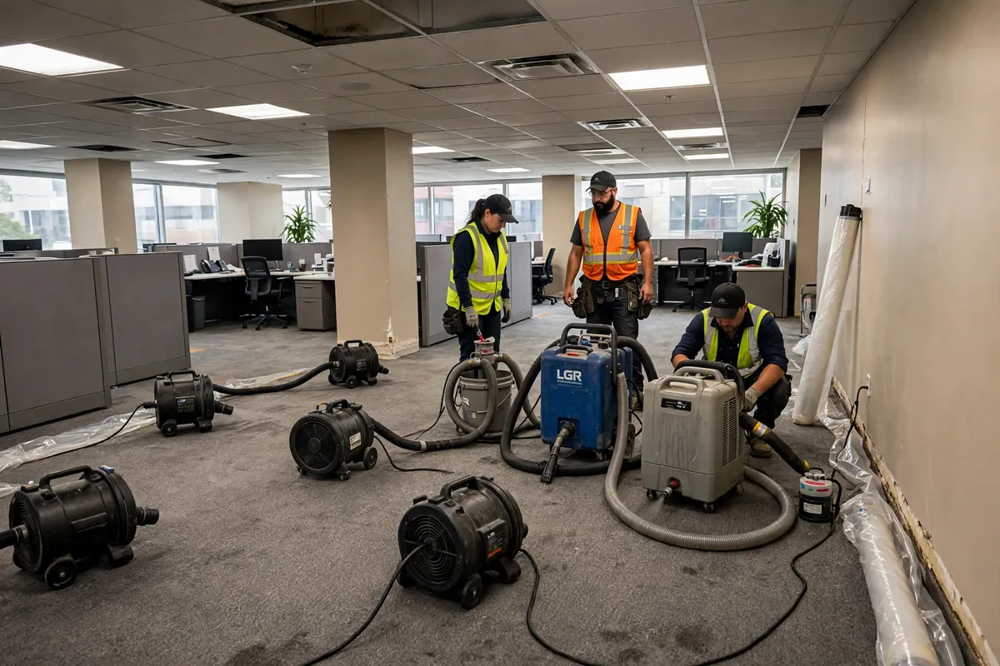

Commercial Water Cleanup in Hollywood, FL
A water loss in a business is two emergencies at once: the physical damage and the downtime. Every day a restaurant kitchen, retail floor, or office suite sits wet is revenue lost and operations disrupted. Commercial water cleanup in Hollywood, FL is built around that reality — rapid response scaled to large spaces, drying planned in phases so parts of the business can keep running, and documentation thorough enough for commercial insurance claims.

Understanding Commercial Water Cleanup in Hollywood
Commercial losses differ in scale and complexity. Open floor plans let water travel far; drop ceilings hide saturated tiles and wet insulation above; large restrooms with multiple fixtures multiply the sources. Slab-on-grade construction — common in Hollywood commercial buildings — means water spreads wide rather than draining away. Then there are the business-specific stakes: health code concerns in food service, inventory and equipment at risk, tenant spaces below or beside the loss, and lease obligations that don't pause for drying.
Access and scheduling shape the whole job. Many commercial cleanups happen overnight or in phases so the business can operate during the day. Drying equipment for a large open space is a different operation than a residential bedroom — more air movers, larger dehumidifiers, and sometimes temporary power. Communication runs through facility managers or owners rather than homeowners, and the documentation standard is higher: commercial adjusters expect detailed moisture maps, daily logs, and photo records.
How We Handle the Job
We scope the full footprint first — in commercial spaces that's often bigger than reported, because water migrates across open floors and into wall bases far from the source. Extraction scales up with high-capacity portable equipment. Drying is phased: critical operational areas get priority so the business can function, while secondary areas dry in sequence. Drop-ceiling tiles that wicked water are removed, and wet insulation above them comes out. Throughout, one point of contact keeps the facility manager updated.
Verification is documented to a commercial standard — room-by-room moisture logs, daily equipment readings, and photo sets that satisfy adjusters and property managers alike. If tenants are involved, each affected space gets its own record. Equipment is scheduled around business hours wherever possible, and loud machinery is consolidated to minimize disruption. Related services such as emergency water extraction, structural drying, and flood cleanup often connect to the same loss depending on conditions on site.
Local Response and Insurance Support
Searching for commercial water cleanup near me usually means you need help without delay. We answer emergency calls around the clock. Documentation — photos and moisture readings — supports conversations with your insurance carrier when the loss is sudden and accidental. We do not decide coverage; we provide clear technical information about the work performed.
When to Call
Call if you have active water, wet materials that are not drying, odors after a leak, or a backup that may involve contaminated water. Early action in Hollywood’s climate is almost always less disruptive than waiting. For neighborhood-specific service, see our service areas. For the full list of capabilities, visit all services.
Frequently Asked Questions
Can you work around our business hours?
Yes — that's standard for commercial work. Loud extraction and removal tasks are typically scheduled overnight or during closed hours, while quieter drying equipment can run during the day. Phased drying lets you keep parts of the space operational. Share your hours and constraints upfront so the plan is built around them.
How do you handle multiple tenants affected by one leak?
Each affected space is assessed and documented separately, since different tenants may have different insurers and lease terms. The source area gets priority, but water migration means neighboring suites need moisture checks too. We coordinate access through building management and keep records per unit.
What documentation will our insurance require?
Commercial carriers typically want more than residential ones: dated photos, moisture mapping, daily drying logs with equipment readings, and a clear record of what was removed versus dried in place. We produce that documentation as part of the job — tell us the format your adjuster prefers and we'll match it.
How long will we be disrupted?
It depends on the water category, the area affected, and whether contaminated materials must be removed. Clean-water losses in open areas often dry in days with phased equipment placement; losses involving removal and reconstruction take longer. The fastest path to a firm timeline is a same-day assessment — guessing without moisture readings helps no one.